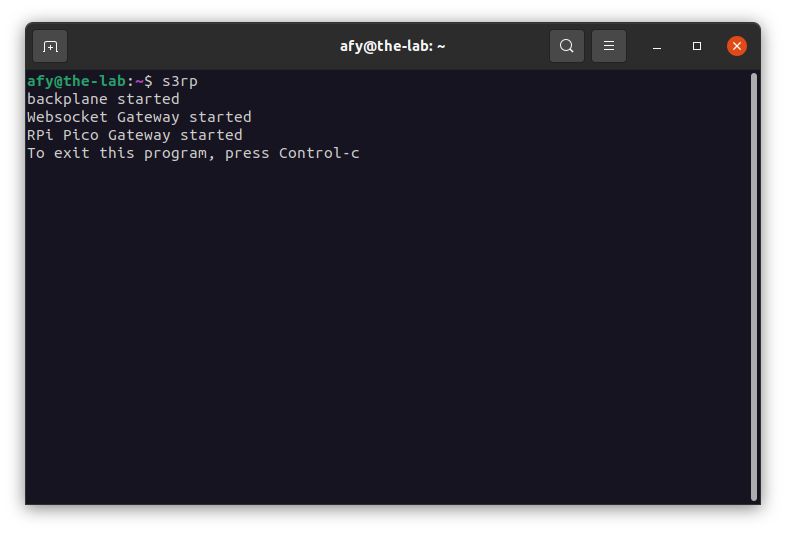
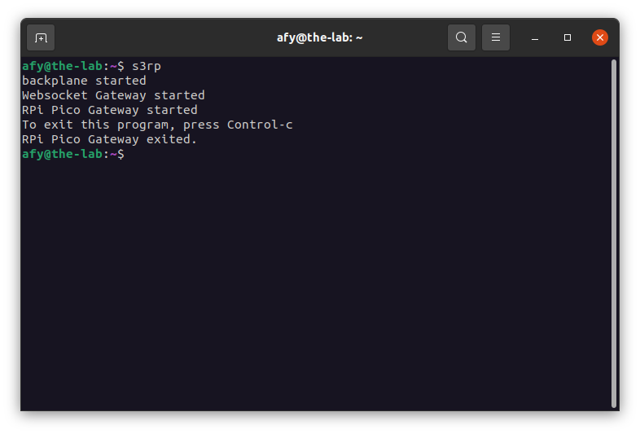
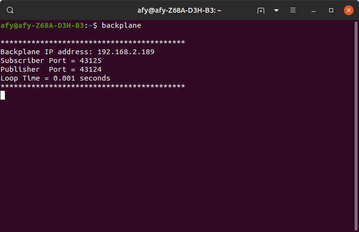
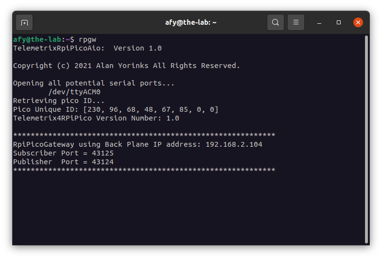
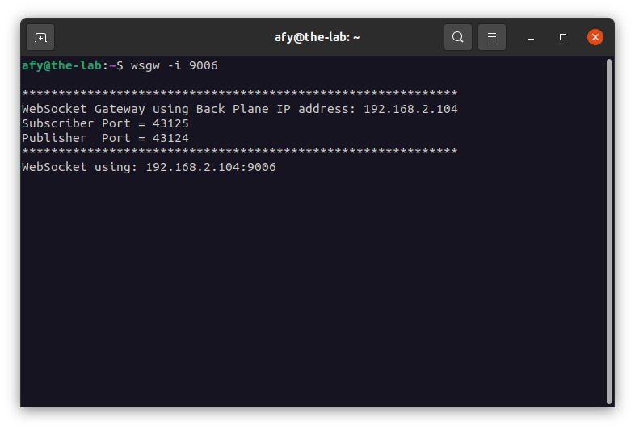

Raspberry Pi Pico
Starting The OneGPIO Server For The Raspberry Pi Pico
Make sure that you have the server application installed on your Pico.
Plug your USB cable to power up the board. You should see the green LED flash twice. If not, check your cable and the connection.
Next, open a terminal window and type:
s3rp

This command automatically starts the Python Banyan Backplane and the Banyan WebSocket, and Banyan Raspberry Pi Pico Gateways.
If you remove the USB cable after starting s3rp, or if you have forgotten to plug in the cable before starting s3rp, you will see something similar to the following:

Here, s3rp tried to start the Raspberry Pi Pico Gateway but detected an error and aborted.
Visit "A Peek Under The Hood" for more information about the Backplane and Gateways.
Troubleshooting
Only use a high-quality USB cable. Verify that you properly connected the cable to both your computer and the Raspberry Pi Pico. If s3rp detects an error in either the backplane or either of the two gateways, it will shut itself down.
To troubleshoot why this may be happening, open a new terminal window and type:
backplane
You should see a similar output, as shown below, indicating that the backplane is running correctly. The IP address does not need to match the one shown.

Next, open an additional terminal window and type:
rpgw

You should see a window similar to the one shown above. Here, the screenshot displays the version of tmx-pico-aio library, shown as TelemetrixRpiPicoAio, the serial port selected, the Pico's unique ID, the version number of the server firmware, shown as Telemetrix4RPiPico, and the standard Python Banyan header.
Next, open a third terminal window and type:
wsgw -i 9006

You should see a window similar to the one shown above.
If there are exceptions or errors in any of the terminal windows, create an issue against the s3-extend distribution pasting any error output into the issue comment.